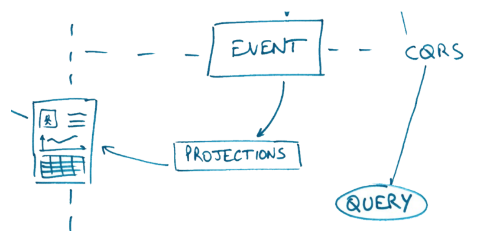

Agilité par le code grâce à CQRS et Event Sourcing
Hand's on - XKE Fevrier 2016
CQRS Concept
Ref. "Conceptual CQRS" - Alberto Brandolini
EventSourcing Concept
NB : DecisionProjection is also called State Ref. Jérémie Chassaing
The New unicorn!
We’ll revolutionize the web!
We’ll create a product like Twitter but better...
A revolution!
MIXTER
Instead tweet...
we’ll quack!
Event Storming Mixter

Ref. "Event Storming" - Alberto Brandolini
Test Driven Workshop
- Working in pairs
- Execute run script and read instructions
- Red Test => Green Test
- 3 steps (+ 2 bonus)
- Command DeleteMessage
- Query TimelineMessage
- Events in Aggregate
Focus on Core Domain
- Do not change
- Tests code
- Infrastructure code
- You can see Identity context implementation as example
Repository Git
git clone git@github.com:DevLyon/mixter.git
./run
Slides:
https://rawgit.com/xebia-france/mixter-xke/master/index.html
1. Delete command
What we will learn
- publish events from aggregate,
- use projection for decision inside aggregate (contains only "state" for future decision, DO NOT keep all state like in an entity)
- Implement "business rules" that insure aggregate consistency (based on decision projection and command=method parameters)
In Brief: The C of CQRS

2. Timeline messages Projection
What we will learn
- Create another model for Query (Projection, TimelineMessageProjection)
- Transform events in a projection model through an EventHandler
- A projection repository (in-memory) with its interface is given
In brief : Q of CQRS
3. Subscription Aggregate
What we will learn
- Create a new aggregate (Subscription)
- Raise events from it : UserFollowed and UserUnfollowed
- Create a decision projection for it
- Implement replay of events (event sourced aggregate)
In brief : C of CQRS + Event Sourcing
4. Aggregates interaction
What we will learn
- Coordinate several aggregates to limit coupling
- Concept of " Eventual consistency"
5. Command Handler
What we will learn
- Integrate previous code from Message & Identity contexts in a command
- Write some web infrastructure code executing the command
=> Request Rest to execute delete Message command, with session validity verification
NB : no tests for this step for now…